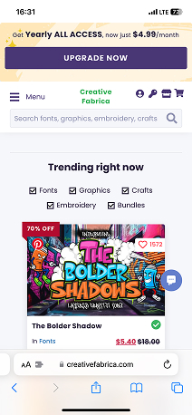
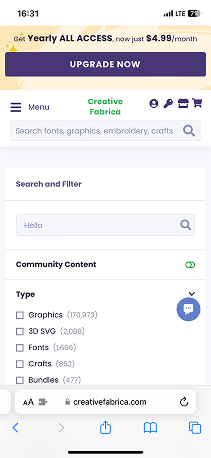

"The goal: develop a novel search engine aimed at elevating user engagement and satisfaction by revolutionizing the search experience on Creative Fabrica."
Creative Fabrica is a marketplace for design assets — fonts, graphics, crafts, embroidery, and more. While the platform already used Algolia for search, the experience around it had room for improvement. I set out to analyze the current search functionality, benchmark against competitors, conduct user research, and design a search page that better serves both users and business goals.
Due to the lack of specific user data and restricted access to business goals, objectives, and stakeholder input, my approach focused on Heuristic-Evaluation principles and a comprehensive Competitor analysis.
A successful search feature must balance user needs and corporate goals. I mapped these across both perspectives to identify what needed improvement:
User Perspective
Business Objectives
Creative Fabrica's search is powered by Algolia — a strong foundation with advanced filtering capabilities. I examined both the desktop and mobile experiences, along with the technology stack powering the search.
Desktop — Search & Filter

Mobile — Main view
Mobile — Query searchThe search engine powering Creative Fabrica excels in providing quick and accurate results. It also gives businesses powerful statistics and customization capabilities to optimize the search experience.
I distributed a survey to designers to understand search habits and satisfaction levels. While the sample size was small, the responses revealed clear patterns about pain points and expectations.
I compared Creative Fabrica's search features against seven competitors to identify gaps and opportunities. Shutterstock, Freepik, and Envato Elements stood out for their exceptional usability and search result quality.
| Platform | Auto-suggest | Filters | Advanced | Mobile | AI Search | Visual | Error Handling | Personalization |
|---|---|---|---|---|---|---|---|---|
| Creative Fabrica | ✓ | ✓ | ✓ | ✗ | ✗ | ✗ | ✗ | ✗ |
| Envato Elements | ✓ | ✓ | ✓ | ✓ | ✗ | ✗ | ✗ | ✗ |
| Design Bundles | ✓ | ✓ | ✓ | ✓ | ✗ | ✗ | ✓ | ✗ |
| Creativemarket | ✓ | ✓ | ✓ | ✓ | ✗ | ✗ | ✗ | ✗ |
| Freepik | ✓ | ✓ | ✓ | ✓ | ✗ | ✓ | ✓ | ✗ |
| Shutterstock | ✓ | ✓ | ✓ | ✓ | ✓ | ✓ | ✓ | ✗ |
Strategic Search Placement — Top-center search bar accessible even during scrolling
Seamless Filter Access — Fixed position with internal scrolling for effortless filter access
Contemporary Aesthetics — Modern, trendsetting design language throughout
Image-Based Search — Search-by-image to enhance discovery capabilities
Enhanced Query Suggestions — Related queries to help users refine their search scope
Adaptive Mobile Design — Responsive and optimized for mobile-first users
User Perspective
Business Perspective
Based on research and competitor benchmarking, I outlined improvements across Product, UX, and UI — then translated them into wireframes showing tangible design solutions.
Product
UX
UI

First Look
Integrated an image-based search feature and restructured the page hierarchy. Suggestions and primary categories are placed directly beneath the search input. Enhanced result card design with refined hover states. The filtering section accommodates categorized content with new file type and color filters.

Collapsed Filters
A collapsible filter section offers users a more spacious browsing experience, enabling them to explore results with greater ease while still having quick access to filter controls when needed.

Query Among Results
Incorporating categories and file types into suggested results provides users with valuable insights, aiding in anticipating their navigation path more effectively and narrowing down results faster.

Fixed Search & Filters
Stabilizing the search bar and ensuring accessible filters during scrolling simplifies the process of modifying queries and adjusting filters, resulting in a more user-friendly experience throughout long browsing sessions.
Through the augmentation of user experience and the introduction of innovative features, we anticipate a reduction in users' rapid exits from the website. This enhancement is expected to encourage prolonged navigation within the platform. Furthermore, effective error handling and personalized recommendations are projected to guide users towards exploring diverse pages across the website.
Through the enhancement of search results, the seamless discovery of desired products by users becomes more attainable. Furthermore, the strategic promotion of services and targeted products holds the potential to catalyze an improvement in the conversion rate.
An intuitive and user-friendly design, coupled with desirable features, can expedite users in locating their requirements efficiently. This, in turn, has the potential to amplify the view count of individual product pages.
When a search engine establishes itself as superior to its competitors, it's only logical that users will instinctively return to the platform when seeking new products.
Achieving an above-average success rate for users, coupled with increased revenue through upselling and improved conversion rates, can open up the possibility of incorporating both internal and external Ad Monetization on the search result page.
It is difficult to provide an exact percentage for how much enhancing the search engine can affect engagement improvement for Creative Fabrica, as it depends on various factors such as the current state of the search engine, the extent of the improvements made, and the preferences of the user base. However, it is safe to say that improving the search engine can have a significant impact on engagement and user satisfaction. A study by Econsultancy found that 30% of website visitors use the search function, and those who use search are more likely to convert than those who do not. By improving the search functionality, Creative Fabrica can make it easier for users to find what they are looking for and increase the likelihood of conversion. Additionally, a study by Forrester found that companies that offer personalized experiences can see a 5–15% increase in revenue. By offering a personalized search experience, Creative Fabrica can potentially see a similar increase in revenue. It is important to track engagement metrics such as user retention, time spent on site, and conversion rates before and after implementing improvements to the search engine to measure the impact of the changes accurately.
Improving the time it takes for a user to navigate from searching a query to opening a product single page can also have a significant impact on engagement and conversion rates. One way to improve this process is by optimizing the website's loading speed. This can be achieved through a variety of methods, such as compressing images, minimizing the use of external scripts, and optimizing the website's code. Another way to improve the user's journey is by providing relevant and accurate search results. This can be achieved by implementing the suggestions mentioned earlier, such as a "Did you mean?" feature and advanced filtering options. Additionally, providing clear and concise product descriptions can help users find what they are looking for quickly and easily. By improving the user's journey from search query to product page, Creative Fabrica can increase engagement and conversion rates.
There is no universally accepted benchmark for how much improvement in time-to-goal is considered acceptable, as it can vary depending on the industry, website, and user expectations. However, a general rule of thumb is that reducing the time it takes for a user to achieve their goal on a website by 50% or more is considered a significant improvement. For example, if it currently takes a user 10 seconds to navigate from searching a query to opening a product single page, reducing that time to 5 seconds or less would be considered a significant improvement. However, it's important to keep in mind that what is considered an acceptable improvement can also depend on the specific goals and objectives of the website and the target audience's expectations.
Ultimately, it's important to track and analyze user behavior metrics, such as bounce rates, time on site, and conversion rates, to determine how website improvements are affecting user engagement and satisfaction. By continuously monitoring and optimizing the website's user experience, it's possible to achieve significant improvements in time-to-goal and other key metrics.
While improving the website's internal search engine may not be a direct way to improve its organic view, it can have a positive impact on user engagement and indirectly contribute to better rankings in search engine results pages.